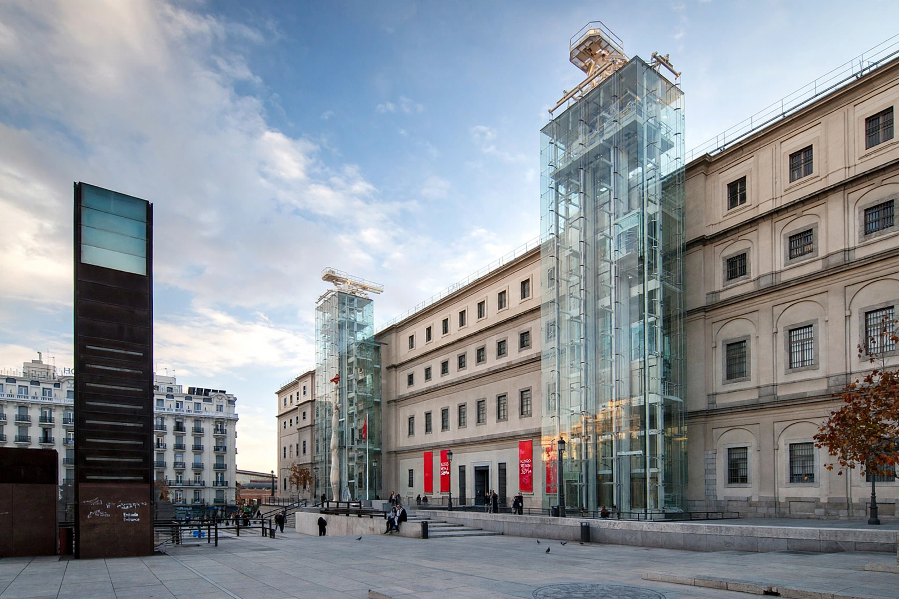

Wikipedia — The Free Encyclopedia

The Museo Nacional Centro de Arte Reina Sofía is Spain's national museum of twentieth-century art, located in Madrid near Atocha station. Named for Queen Sofía, it forms, with the Prado and the Thyssen-Bornemisza, the so-called Golden Triangle of Art. Its most famous work is Picasso's Guernica, the monumental anti-war canvas of 1937.
The museum occupies the former General Hospital of Madrid, a vast neoclassical building of the eighteenth century designed under Francesco Sabatini. It opened as an art centre in 1986 and as a national museum in 1988, and was inaugurated in its present form in 1992. Two glass circulation towers designed by Ian Ritchie rise on the façade. A major extension by the French architect Jean Nouvel, with three new buildings under a great winged roof, opened in 2005.
The collection concentrates on art from 1881, the year of Picasso's birth, to the present. Alongside Guernica — transferred from the Prado in 1992 — are extensive holdings of Salvador Dalí, Joan Miró, Juan Gris, Antoni Tàpies and the Spanish avant-gardes, plus international contemporary art, photography, film and performance. The museum also administers sites including the Palacio de Cristal and Palacio de Velázquez in Retiro Park, used for temporary installations.